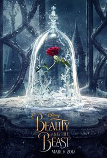

.jpg)
The first film is Collateral Beauty
Released date:14 October 2016
Director:David Frankel
Writer:Allan Loeb
When a successful New York advertising executive suffers a great tragedy, he retreats from life.
While his concerned friends try desperately to reconnect with him, he seeks answers from the universe by writing letters to Love, Time and Death.
But it's not until his notes bring unexpected personal responses that he begins to understand how these constants interlock in a life fully lived, and how even the deepest loss can reveal moments of meaning and beauty Written by Warner Bros
Released date: 7 May 2016
Director: Patty Jenkins
Writers: Allan Heinberg (screenplay), Geoff Johns (screenplay)
Before she was Wonder Woman, she was Diana, princess of the Amazons, trained to be an unconquerable warrior.
Raised on a sheltered island paradise, when an American pilot crashes on their shores and tells of a massive conflict raging in the outside world, Diana leaves her home, convinced she can stop the threat.
Fighting alongside man in a war to end all wars, Diana will discover her full powers and her true destiny.
Released date: 1 October 2016
Director: Daniel Espinosa
Writer: Rhett Reese, Paul Wernick
Six astronauts aboard the space station study a sample collected from Mars that could provide evidence for extraterrestrial life on the Red Planet.
The crew determines that the sample contains a large, single-celled organism - the first example of life beyond Earth. But..things aren't always what they seem.
As the crew begins to conduct research, and their methods end up having unintended consequences, the life form proves more intelligent than anyone ever expected.
Released date: 14 October 2016
Director: Bill Condon
Writer: Evan Spiliotopoulos (screenplay), Stephen Chbosky (screenplay)
An adaptation of the classic fairy-tale about a monstrous prince and a young woman who fall in love.